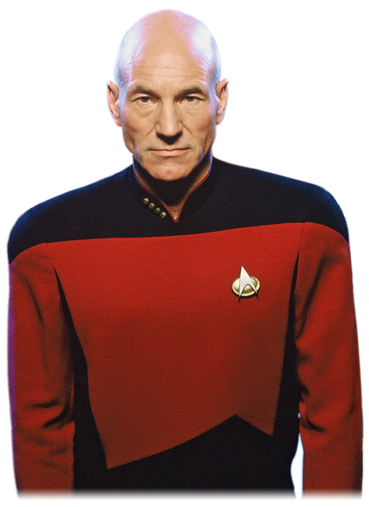
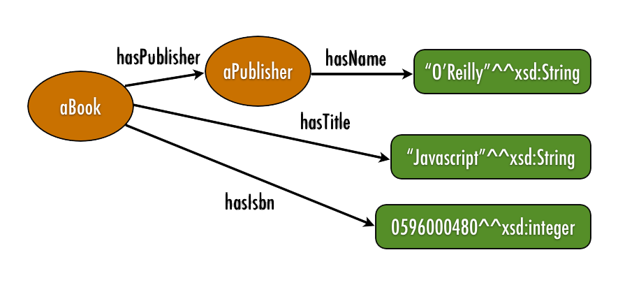
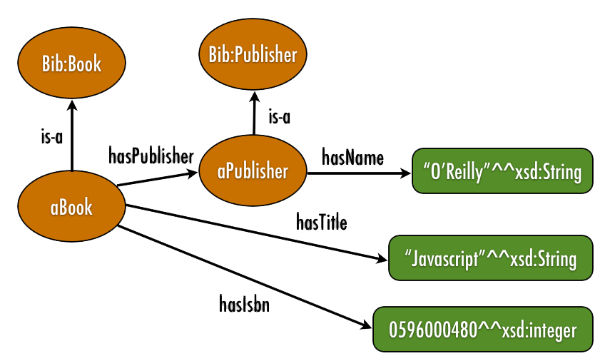

What I would like you to know by the end of this talk
- how a computer represents a document
- how documents are indexed and queries are matched
- some key ranking algorithms and how they work
- some of the features of modern web retrieval systems
What I would like you to know by the end of this talk
- how a computer can represent facts and concepts as a graph
- the difference between semantic and non-semantic approaches to knowledge representation
- how to publish linked data on the web
What I would like you to know by the end of this talk
- How Statistical Machine Translation Evolved
- How SMT works
- The Challenges of Training SMT Systems
{kind=link}
[I do not] carry such information in my mind since it is readily available in books. ...The value of a college education is not the learning of many facts but the training of the mind to think — Albert Einstein
Information Retrieval
Document representation.
Lines Written on a Seat on the Grand Canal, Dublin
'Erected to the memory of Mrs. Dermot O'Brien'
O commemorate me where there is water,
Canal water, preferably, so stilly
Greeny at the heart of summer. Brother
Commemorate me thus beautifully
Where by a lock niagarously roars
The falls for those who sit in the tremendous silence
Of mid-July.No one will speak in prose
Who finds his way to these Parnassian islands.
A swan goes by head low with many apologies,
Fantastic light looks through the eyes of bridges -
And look! a barge comes bringing from Athy
And other far-flung towns mythologies.
O commemorate me with no hero-courageous
Tomb - just a canal-bank seat for the passer-by.
-Patrick Kavanagh
Copyright © Estate of Katherine Kavanagh
Lines Written on a Seat on the Grand Canal, Dublin
A, And, And, Athy, Brother, Canal, Commemorate, Dermot, Erected, Fantastic, Greeny, Mrs, No, O, O, OBrien, Of, Parnassian, The, Tomb, Where, Who, a, a, a, apologies, at, barge, beautifully, bridges, bringing, by, by, canal-bank, comes, commemorate, commemorate, eyes, falls, far-flung, finds, for, for, from, goes, head, heart, hero-courageous, his, in, in, is, islands, just, light, lock, look, looks, low, many, me, me, me, memory, mid-July, mythologies, niagarously, no, of, of, of, one, other, passer-by, preferably, prose, roars, seat, silence, sit, so, speak, stilly, summer, swan, the, the, the, the, the, there, these, those, through, thus, to, to, towns, tremendous, water, water, way, where, who, will, with, with
Lines Written on a Seat on the Grand Canal, Dublin
How do we match the Query to the document?
- Choose the document that mentions the query terms most often
- We call this Term Frequency, tf
- often apply a scaling factor to account for long documents
- But, this has weaknesses
What words are most important?
- Count how many documents there are where the term appears
- in the corpus
- We call this Document Frequency, dft
- document measure, not word measure
What words are most important?
- We use the inverse document frequency as a scaling factor for the term frequency
- idft = Log( #Documents / dft)
How do we match the Query to the document?
- tf x idt
- The number of times the term appears in the document, scaled against the overall importance of the word in the corpus
- Weight documents that mention more distinctive terms more often higher
How do we match the Query to the document?
Look at the words (as a bag) and choose the most distinctive (content-based approach)
- Some improvements
- Eliminate the most common words of all (stop words)
- Stem words (remove -ing, etc.)
- Look at groups of words (n-grams)
- Fix spelling errors (edit distance)
- Use document structure (Title, link text, metadata)
- Smarter, probablistic algorithm (Okapi BM25F)
Apache Lucene default stopwords:
a, an, and, are, as, at, be, but, by,
for, if, in, into, is, it,
no, not, of, on, or, such,
that, the, their, then, there, these,
they, this, to, was, will, with
More aggressive lists can be extremely powerful. (XIXthC. fiction.)
↵Stemmers and Lemmatisers are used to group together words that differ only for grammatical reasons (plurals, verbs, nouns, adjectives, adverbs).
Since it effectively provides a ‘suffix STRIPPER GRAMmar’, I had toyed with the idea of calling it ‘strippergram’, but good sense has prevailed, and so it is ‘Snowball’ named as a tribute to SNOBOL, the excellent string handling language of Messrs Farber, Griswold, Poage and Polonsky from the 1960s.—Martin Porter
- The most prominent stemmer is probably Snowball
- You can also train them up using machine learning
- Depend on language, normalisation, vocabulary, etc.
The World Wide Web is a bare-bones Hypertext system.
- No content registry
- Unidirectional links
- No link relationships
- No (little) meta-data
Imagine a web surfer who clicks at random, eventually getting bored.
- Which sites is he most likely to find?
- How quickly does he tire?
- What does this tell us?
Aside: Markov chains
Markov Chains are systems which undergo transitions to a finite set of states with certain probabilities based only on the current state. They can be used to simulate sentences, markets, users, amongst countless other examples.
- We can therefore imagine the 'value' of a page as being based on the reputation of the pages that link to it.
- The HITS algorithm is a similar approach, which is more explicit.
Pagerank has had an incredible impact on the structure of the Web
- Early on, it could be 'gamed' (Google-Bombing, and -whacking)
- There is a continuous 'arms race' between SEO (Search Engine Optimisation) and the company
- What's the effect of automatic/semi-automatic authoring tools, such as CMS?
- Personalisation and other signals are now extremely important.
Rolling your own (providing a modern search engine)
Lucene, especially Solr Elastic Search A good discussion on the merits of each (and some others)
There are many others, for example if you want to do algorithm research, or fine-tune the system. It's also worth noting that many systems already embed Lucene/Solr, or permit it.
Conclusions.
The content you offer needs to be available, described and discoverable.- How will your users find the content, searching the web (while bored?)
- How will your users access the content, once they find it?
- How will your users describe what they want from your content?
Machine Translation.
This material is based on slides and a tutorial by Dr. Declan Groves. I would like to gratefully acknowledge his generosity in permitting me to use and adapt them.
What does a universal translator need to do to work?

Star Trek is copyright © CBS Television Studios
Approaches to Machine Translation
Poetry is what gets lost in translation.—Robert Frost.
Translate from source language to target language
- Rule-Based
- Example-Based
- Statistical
Rule-based MT
Given
- A dictionary from source to target
- Rules for recognising terms in the Source Language
- Rules for constructing sentences in the Target Language
Process
- Identify the terms in the sentence of the Source Language
- Translate the words (with the correct sense)
- Construct the sentence in the Target Language
Example-based MT
Given
- A large number of example translations
- Rules for recognising similar sentences in the same language
- Rules for thesaurus substitution
Process
- Identify the most similar sentence in the example list.
- Find the translations for the substitute terms
- Incorporate the substitutions
Statistical MT
Given
- An appropriate parallel corpus
- A statistical model of language
Process
- Choose the target sentence/phrase/word which is most likely to be the translation of the source
- Apply any clean-up rules
Aligned Bilingual Corpora
- A document-aligned bilingual corpus corresponds on a document level
- For translation, we required sentence-aligned bilingual corpora The sentence on line 1 in the source language text corresponds to (i.e. is a translation of) the sentence on line 1 in the target language text etc.
- Often referred to as parallel aligned corpora
- Sentence aligned bilingual parallel corpora are essential for statistical machine translation
Using Previous Translation
Suppose we already know (from a sentence-aligned bilingual corpus) that:
- "dog" ⇔ "madra"
- "I have a cat." ⇔ "Tá cát agam."
- We can theoretically translate:
"I have a dog"⇔"Tá madra agam."
Even though we have never seen "I have a dog" before, statistical machine translation induces information about unseen input, based on previously known translations
(Primarily co-occurrence statistics; takes contextual information into account)
All modern approaches are based on building translations for complete sentences by putting together smaller pieces of translation.
In reality SMT systems calculate much more complex statistical models over millions of sentence pairs for a pair of languages.
Upwards of 2M sentence pairs on average for large-scale systems.
Statistics calculated to represent:
- Word-to-word translation probabilities
- Phrase-to-phrase translation probabilities
- Word order probabilities
- Structural information (i.e. syntactic information)
- Fluency of the final output
Human evaluation vs. automatic metrics
Human evaluation is expensive, time-consuming, not 100% objective (two evaluators may not agree on their judgement of the same MT output)
Automatic evaluation is cheap, fast and consistent
- Judge the quality of an MT system by comparing its output against a human-produced “reference” translation
- The more similar the translation is to the reference, the better
- Wide-range of metrics, mostly focusing on exact word/phrase-level correspondences:
- Edit-distance metrics: Levenshtein, Word Error Rate (WER), Translation Error Rate (TER),
- Ngram-based metrics: Precision, Recall, F1-measure, GTM, BLEU
- Linguistic-based metrics: DELiC4MT
Example:
Reference: “the Iraqi weapons are to be handed over to the army within two weeks"
MT output: "in two weeks Iraq’s weapons will give army"
Possible metric components:
- Precision: correct words / total words in MT output
- Recall: correct words / total words in reference
- Combination of P and R (i.e. F1= 2PR/(P+R))
- Levenshtein edit distance: number of insertions, deletions, substitutions required to transform MT output to the reference
The Semantic Approach
How do we build a distributed, bare-bones, decentralised, global pool of machine-readable knowledge?
Or,
How do we move from a web of virtual documents (human-consumable text) to a web of knowledge (machine-consumable facts)?

- The Key feature of the Semantic approach is that we define both the Schema and the Instances, so both can be queried.
- Arranged as a graph, the network is part of the knowledge you can access.
Resource Description Framework
This is the most commonly-used approach to encoding semantic data
The Schema can either be RDFS or OWL-based (SKOS is also an option)
Everything is built around the concept of a triple.
<Subject, Predicate, Object>
The Triples are then built into a Graph
| ISBN | Title | Author | PublisherID | Pages |
|---|---|---|---|---|
| 596000480 | Javascript | D.Flanagan | 3556 | 936 |
| 596002637 | Practical RDF | S. Powers | 7642 | 350 |
| ... | ... | ... | ... | ... |
A Row in a Table is an instance in RDF: the Subject
| ISBN | Title | Author | PublisherID | Pages |
|---|---|---|---|---|
| 596000480 | Javascript | D.Flanagan | 3556 | 936 |
| 596002637 | Practical RDF | S. Powers | 7642 | 350 |
| ... | ... | ... | ... | ... |
A Column in a Table is a Property in RDF: the Predicate
| ISBN | Title | Author | PublisherID | Pages |
|---|---|---|---|---|
| 596000480 | Javascript | D.Flanagan | 3556 | 936 |
| 596002637 | Practical RDF | S. Powers | 7642 | 350 |
| ... | ... | ... | ... | ... |
A Cell Value in a Table is the propery of one instance: the Object
| ISBN | Title | Author | PublisherID | Pages |
|---|---|---|---|---|
| 596000480 | Javascript | D.Flanagan | 3556 | 936 |
| 596002637 | Practical RDF | S. Powers | 7642 | 350 |
| ... | ... | ... | ... | ... |
The Column Names are (part of) the Schema in RDF
- The RDF Graph is built up from the triples, and includes the Instances, as well as their properties.
- External references are made to the Schema(s) as namespaces
- Using a graph allows knowledge-driven querying, and inference

aBook is our instance
aBook hasTitle "Javascript"^^XSD:String.
aBook hasIsbn "0596000480^XSD:Integer.
aBook hasPublisher aPublisher.
aBook is-a Bib:Book.
- Schemas define the knowledge space, they group Instances and describe their common properties.
e.g.: Instances of the class 'Book' have the property 'hasPublisher', which is an instance of the 'Publisher' class - You are free to write your own Schema, but reuse is strongly recommended. Some popular Schemas include:
Provide a common API for data on the Web which is more convenient than many separately and differently designed APIs published by individual data suppliers. Tim Berners-Lee, the inventor of the Web and initiator of the Linked Data project, proposed the following principles upon which Linked Data is based:From the Linked Data Glossary
- Use URIs to name things;
- Use HTTP URIs so that things can be referred to and looked up ("dereferenced") by people and user agents;
- When someone looks up a URI, provide useful information, using the open Web standards such as RDF, SPARQL;
- Include links to other related things using their URIs when publishing on the Web.
SPARQL
- The language for querying the Linked Data Web
- Rich syntax, permits retrieving facts, constructing graphs, asking questions and exploring the schema and data.
- Evolving standard, now at 1.1
DBPedia Query Example: Is Mt. Everest Higher than K2?
PREFIX owl: <http://www.w3.org/2002/07/owl#>
PREFIX xsd: <http://www.w3.org/2001/XMLSchema#>
PREFIX rdfs: <http://www.w3.org/2000/01/rdf-schema#>
PREFIX rdf: <http://www.w3.org/1999/02/22-rdf-syntax-ns#>
PREFIX foaf: <http://xmlns.com/foaf/0.1/>
PREFIX dc: <http://purl.org/dc/elements/1.1/>
PREFIX : <http://dbpedia.org/resource/>
PREFIX dbpedia2: <http://dbpedia.org/property/>
PREFIX dbpedia: <http://dbpedia.org/>
PREFIX skos: <http://www.w3.org/2004/02/skos/core#>
ASK where{
<http://dbpedia.org/resource/Mount_Everest> dbpedia2:elevationM ?everestA.
<http://dbpedia.org/resource/K2> dbpedia2:elevationM ?k2A.
FILTER(?everestA > ?k2A).
}
See also: Europeana SPARQL Endpoint
Graph-based data is not a panacea.
- Data: CSV, XML, or in a Relational Database
- Schema: Adopt and extend existing concepts
- Links: Link to other collections
- Publishing Platform: 'Quad Store', serves human and machine-readable content
- On the Web, Open License
- Machine-readable Data
- Non-proprietary format
- RDF standards
- Linked RDF
Final Thoughts
Two types of challenge.
Final Thoughts
What's the most effective form of knowledge to share?
Final Thoughts
Think about the user. Think about your data.
Thank You.
This research is supported by the Science Foundation Ireland (Grant 12/CE/I2267) as part of the Centre for Next Generation Localisation at Trinity College Dublin.
Built with impress.js, d3.js and github.io